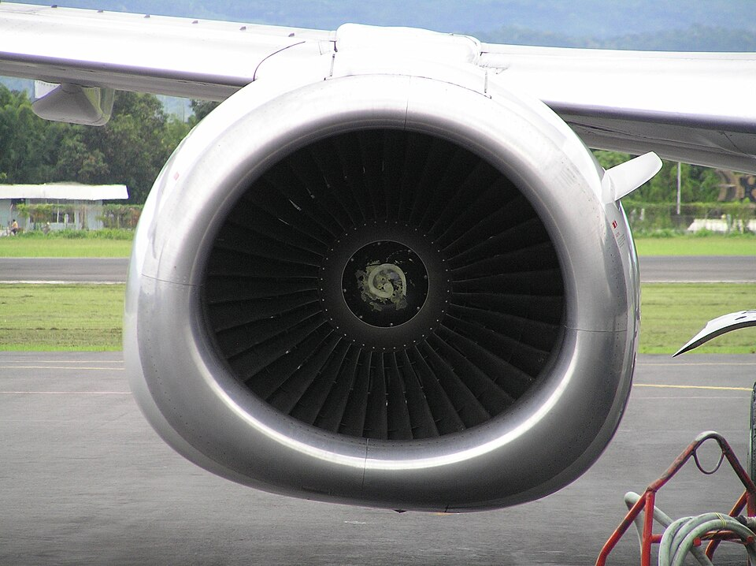
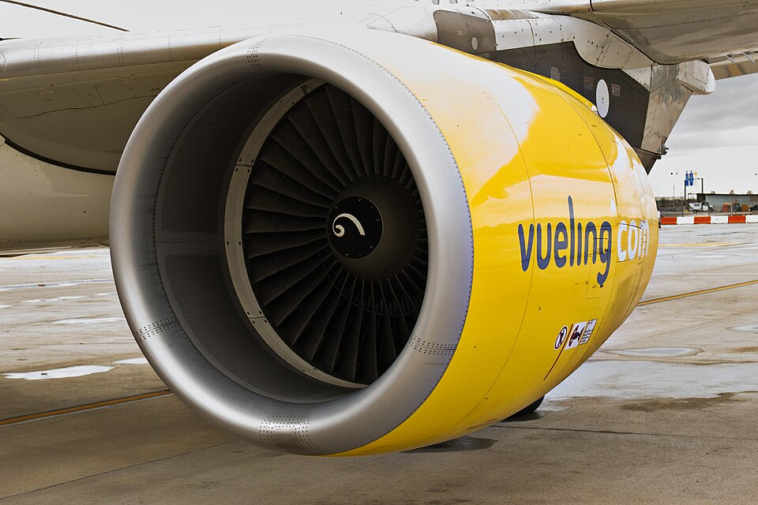
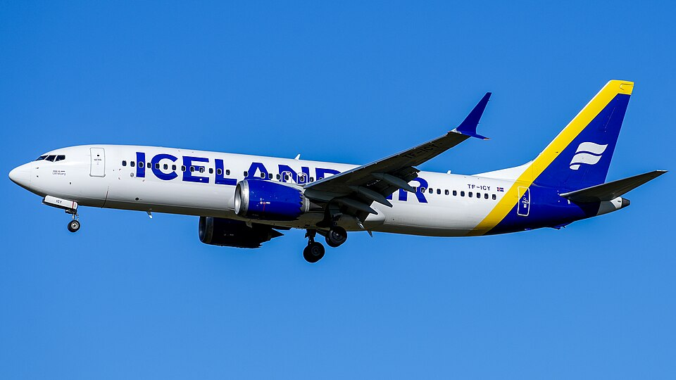
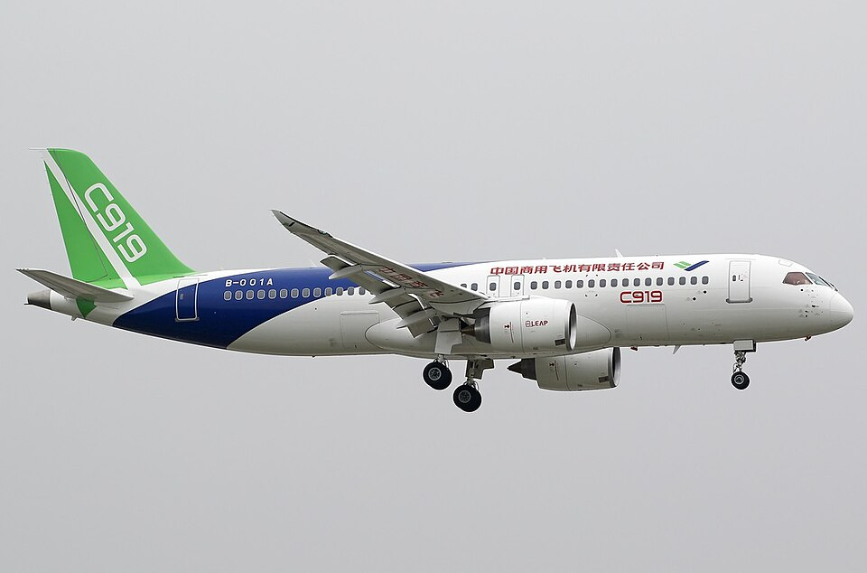

下面三架都是真实的 3D 模型，可以拖动旋转、滚轮缩放。先随便转转看看，然后进入五关挑战——从机背天线、引擎与整流罩的形状，一直考到现实照片辨认。通关后可以把自己的答题明细下载成表格。
正在载入 3D 模型…
准备中
拖动旋转 · 滚轮缩放
眼力挑战 · 五关
第 1 关 / 5
得分 0
正在载入模型，请稍候…
为什么这样就能认出来
三家公司的设计哲学不同，落到具体机型上就成了稳定的"家族特征"。把上面三个模型转一转，对照着看会发现：
- 机背天线：波音 737 机背靠前与中后段常各有一根显眼的刀状 VHF 天线，俯视时是一对凸起；空客一派（A320、C919）多用低矮的共形天线。（不同航司、批次的天线配置会有差异，天线只能当辅助线索。）
- 发动机与整流罩：737 为了留出离地间隙，把发动机整流罩底部削平成「扁嘴」；A320 是标准圆筒；C919 的圆筒直径还要更大一号。
- 机头整流罩（雷达罩）：波音 737 更尖、驾驶舱侧窗偏方正；空客一派（A320、C919）更圆钝、侧窗后缘收成斜角。
- 翼尖小翼：737 用向后斜掠的融合式翼梢小翼（MAX 为上下分叉的双羽）；A320 和 C919 用竖直的「鲨鱼鳍」。
三机速查表
| 细节 | A320 · 空客 | B737 · 波音 | C919 · 中国商飞 |
|---|---|---|---|
| 机头 | 圆钝、略下垂 | 尖、锐利 | 圆钝（空客设计语言） |
| 驾驶舱侧窗 | 偏斜、后缘收窄 | 偏矩形、方正 | 偏斜，与 A320 相近 |
| 发动机 | 圆形、离地较高 | 进气道底部削平「扁嘴」 | 圆形、直径更大 |
| 翼尖小翼 | 鲨鱼鳍 sharklet | 融合式翼梢小翼（后斜） | 鲨鱼鳍 sharklet |
| 机身长度 | 37.57 m | 39.47 m | 38.89 m |
| 翼展 | 35.80 m | 35.79 m | 35.80 m |
| 发动机型号 | LEAP-1A / V2500 | LEAP-1B / CFM56-7B | LEAP-1A / CJ-1000A |
现实照片里的细节
模型看的是结构，照片看的是实机。下面三张对应关卡里考到的发动机整流罩与整机轮廓：




图片来源
本页实拍照片均取自 Wikimedia Commons，按原许可标注作者与出处：
- 汉莎 A320-211 — Julian Herzog，CC BY 4.0，原图
- Frontier A320neo — Acroterion，CC BY-SA 4.0，原图
- Southwest 737 MAX 8 — Acroterion，CC BY-SA 4.0，原图
- Icelandair 737 MAX 8 — MarcelX42，CC BY-SA 4.0，原图
- COMAC C919 — Ken Chen，CC BY-SA 4.0，原图
- C919 首架原型机 B-001A — Weimeng (airliners.net)，CC BY-SA 4.0，原图
- Vueling A320 的 CFM56 — Bene Riobó，CC BY-SA 4.0，原图
- 波音 737-400 发动机 — Davidelit，公有领域，原图